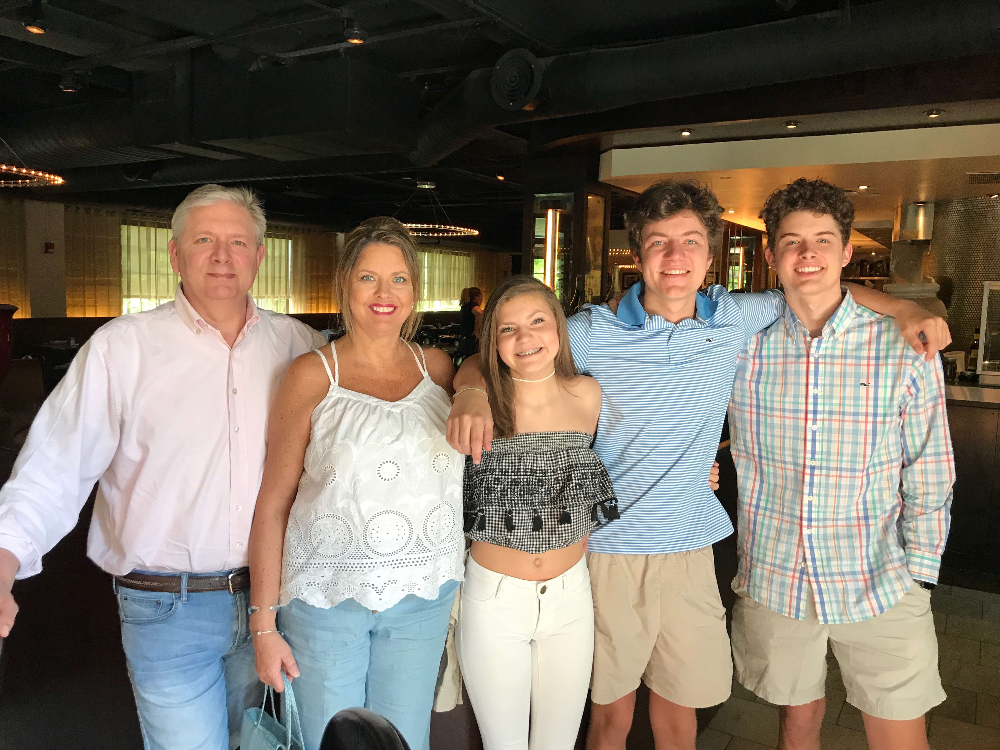
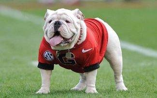

My full name is Taggert Joseph Sawick, I am a second year here at the University of Georgia. I was born in Georgia and I'm twenty years old. Before UGA, I attended Allatoona High School in Acworth, Georgia were me and my family live. My family consists of an older brother Jake, a little sister London, a mother Michelle, and father Michael. I also have two dogs Mia and Gigi. 
| Name | Age |
| Michael | 59 |
| Michelle | 57 |
| Jake | 21 |
| Tag | 20 |
| London | 15 |
Here at UGA I am a Mathematics major and intend to also get a certificate in actuarial science. Right now, I'm in five classes including this and the lab. I lived in Creswell Hall my first year and currently live in The Mark. I really enjoy attending UGA and living in Athens. There is so much to do around the city and a lot of good food. One of my favorite things about this school is the sports. I love going to football and basketball games here and seeing our teams play. Click "UGA Athletics" too see what's going on with our teams. UGA Athletics 
| Title | Days |
| Calculous 3 | MWF |
| Intro To Higher Mathematics | MWF |
| Topics In Computing | MW |
| Topics in Computing Lab | TT |
| Culturally Diverse American Art | TT |
Some things I like to do in my free time are hangout with friends, go to the movies, and spend time with my family. At the Mark I live with three of my best friends from home, Nick, Jack, and Connor, who also go to UGA. Jack is a Business Marketing major, Nick is a General Business major, and Connor is a Political Science major. We all are part of the same friend group here, so we all get along pretty well and have a lot of the same interests. I really enjoy living with them and couldn't imagine living with a different group.